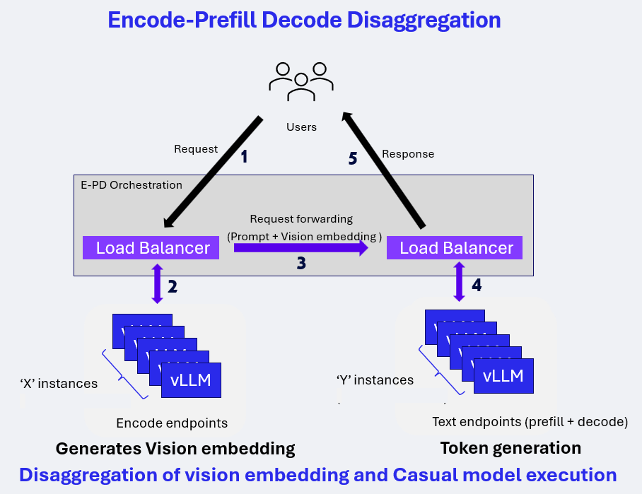

Multimodality Support with vLLM¶
Overview¶
vLLM on Qualcomm Cloud AI accelerators supports multimodal inference - the ability to process both text and non-text inputs such as images, video frames and audio within a single model request. This enables use cases such as visual question answering, image and video understanding, document understanding, and speech-to-text transcription, all served through a standard OpenAI-compatible API.
Supported modalities:
Vision-Language Models (VLMs) - image/video + text input, text output (LLaVA, InternVL, Granite Vision, Gemma 3, Qwen2.5-VL, Qwen3-VL and others)
Audio (Speech-to-Text) - audio input, text output (Whisper family)
A supported model can be served using one of the following QPC (Qualcomm Program Container) modes:
Single QPC - a single compiled model performs both image encoding and text generation. This is the simplest option and a good starting point.
Dual QPC (recommended) - image encoding and text generation run as two separate QPCs. This is the recommended approach for production because it lets each stage be scaled independently and generally gives higher throughput.
Triple QPC - the text stage is split further into separate prefill and decode QPCs, so image encoding, prefill and decode each run as their own QPC. This mode is used for the largest (Mixture-of-Experts) models.
The Dual QPC and Triple QPC modes can be deployed as disaggregated serving, in which each stage runs as a fully independent vLLM endpoint that scales horizontally on its own pool of devices. Dual QPC is served as Encode + Prefill-Decode (E-PD) and Triple QPC as Encode-Prefill-Decode (E-P-D). See E-P-D Disaggregated Serving on vLLM for Vision-Language Models.
Note
Multimodal models run on the vLLM V1 engine (vLLM v0.23.0), which is the recommended
path and supports multi-image and multi-resolution inputs. The earlier V0 engine
(vLLM v0.8.5) remains available for models up to and including
Qwen3-VL-30B-A3B-Instruct (for example Qwen2.5-VL and Qwen3-VL). If you need
prefix caching or on-device sampling for a multimodal model, use the V0 path - these
features aren’t yet available on V1.
Models supported with QAIC¶
Vision-Language Models¶
Architecture |
Model Family |
Representative Models |
QPC Modes |
|---|---|---|---|
Gemma3ForConditionalGeneration |
Gemma 3 |
google/gemma-3-4b-it |
Dual |
Gemma4ForConditionalGeneration |
Gemma 4 (MoE) |
google/gemma-4-31B-it, google/gemma-4-26B-A4B-it, google/gemma-4-E4B-it, google/gemma-4-E2B-it |
Triple |
LlavaNextForConditionalGeneration |
Granite Vision |
ibm-granite/granite-vision-3.2-2b |
Dual |
InternVLChatModel |
InternVL 2.5 / 3 / 3.5 |
OpenGVLab/InternVL2_5-1B, OpenGVLab/InternVL3_5-1B |
Single, Dual |
LlavaForConditionalGeneration |
LLaVA-1.5 |
llava-hf/llava-1.5-7b-hf |
Single, Dual |
Qwen2_5_VLForConditionalGeneration |
Qwen2.5-VL |
Qwen/Qwen2.5-VL-3B-Instruct, Qwen/Qwen2.5-VL-32B-Instruct |
Dual |
Qwen3VLForConditionalGeneration |
Qwen3-VL |
Qwen/Qwen3-VL-32B-Instruct |
Dual |
Qwen3VLMoeForConditionalGeneration |
Qwen3-VL MoE |
Qwen/Qwen3-VL-30B-A3B-Instruct, Qwen/Qwen3-VL-235B-A22B-Instruct |
Triple |
Qwen3_5MoeForConditionalGeneration |
Qwen3.5 MoE |
Qwen/Qwen3.5-35B-A3B, Qwen/Qwen3.5-122B-A10B |
Triple |
Qwen3_5MoeForConditionalGeneration |
Qwen3.6 MoE |
Qwen/Qwen3.6-35B-A3B |
Triple |
Notes¶
QPC Modes lists the deployment modes validated for each model family. Dual QPC is the recommended mode for production. Mixture-of-Experts (MoE) models use the Triple QPC mode (E-P-D disaggregated serving with pipeline-parallel prefill).
The Qwen VL models (Qwen2.5-VL, Qwen3-VL and later) support multi-image, video (multi-frame) and multi-resolution inputs.
Audio Models (Speech-to-Text)¶
Architecture |
Model Family |
Representative Models |
|---|---|---|
WhisperForConditionalGeneration |
Whisper |
openai/whisper-tiny, openai/whisper-base, openai/whisper-small, openai/whisper-medium, openai/whisper-large, openai/whisper-large-v3-turbo |
Notes¶
Audio models are supported under the Speech-to-Text task using the Whisper architecture, and run in the Single QPC mode.
For the complete validated model matrix, see Validated Models and vLLM Support - Efficient Transformers Documentation.
Limitations¶
Continuous batching (batch size greater than 1) for multimodal models requires the Dual QPC or Triple QPC mode. The Single QPC mode processes one multimodal request at a time.
Prefix caching and on-device sampling for multimodal models are supported only on the V0 (vLLM
v0.8.5) path, for models up to and includingQwen3-VL-30B-A3B-Instruct. These features are not yet supported on V1.Speculative decoding (ngram, suffix, draft_model, dflash) isn’t supported for multimodal models.
LoRA / LoRAX isn’t supported for multimodal models.
For the Qwen VL models, all images within a single request must have identical dimensions (same height and width). Different requests may use different resolutions.
vLLM flags and environment variables¶
Flag / variable |
Default |
Description |
|---|---|---|
|
None |
Path to a pre-compiled QPC. When set, vLLM loads the QPC directly and doesn’t compile
the model. For the Dual QPC approach, provide both QPC paths separated by a colon:
|
|
|
Set to |
Running a model (offline)¶
The example scripts under examples/ in the vllm-qaic repository show how to run
multimodal inference offline with the LLM API.
Dual QPC¶
examples/qaic_vision_language.py runs a single image (or text-only) request. Supported
--model-type values include llava, internvl_chat, gemma3, qwen2_5_vl and
qwen3_vl.
# Single image
python examples/qaic_vision_language.py \
--model-type qwen2_5_vl \
--image-urls "https://picsum.photos/id/237/536/354" \
--questions "Describe the image in detail." \
--device-group-vision 0 \
--device-group-lang 1
# Text-only (no vision encoder is started)
python examples/qaic_vision_language.py \
--model-type qwen2_5_vl \
--modality text \
--questions "What is the capital of France?" \
--device-group-lang 0
examples/qaic_vision_language_multi_image.py runs multi-image / multi-frame requests
(qwen2_5_vl, qwen3_vl, internvl_chat):
python examples/qaic_vision_language_multi_image.py \
--model-type qwen2_5_vl \
--image-urls \
https://picsum.photos/id/237/536/354 \
https://picsum.photos/id/238/536/354 \
https://picsum.photos/id/239/536/354 \
--num-images 3 \
--questions "Compare the images." \
--device-group-vision 0 \
--device-group-lang 1
Single QPC (audio)¶
The Whisper audio model runs in the Single QPC mode. First install the audio dependencies:
pip install librosa==0.10.2 soundfile==0.13.1
Then run examples/qaic_whisper.py with a local audio file:
python examples/qaic_whisper.py --file-path PATH_TO_AUDIO_FILE
Running a model in PyT mode (experimental)¶
The sections above describe AoT mode, where vision-language models are compiled into one or more QPCs. Selected Qwen vision-language models also run in PyT (PyTorch eager) mode, without QPC compilation. See vLLM supported models for the list of PyT mode models.
In PyT mode, the vision encoder and language model run in the same vLLM
process through torch_qaic. The Single QPC, Dual QPC, and E-P-D
disaggregated deployment modes don’t apply.
export QAIC_VISIBLE_DEVICES=0
python examples/qaic_eager_mode_vision_language.py \
--model-type qwen2_5_vl \
--tp-size 1 \
--image-path /path/to/image.jpg \
--question "Describe the image."
For 32B models, set QAIC_VISIBLE_DEVICES=0,1,2,3 and --tp-size 4.
Disable multimodal¶
A multimodal model can be run as a text-only model by disabling multimodal processing.
Once disabled, the model supports continuous batching with a batch size greater than 1 and no
vision encoder is loaded. Set this in override_qaic_config:
override_qaic_config = {"disable_multimodal": True}
E-P-D Disaggregated Serving on vLLM for Vision-Language Models¶
For large-scale online serving, the VLM pipeline is split into independent stages that each run as their own vLLM endpoint and scale horizontally on a dedicated pool of devices:
Encode (Vision) - processes images or video frames and produces vision embeddings.
Prefill (Text) - consumes the vision embeddings and prompt tokens and builds the KV cache.
Decode (Text) - consumes the KV cache and generates the output tokens.
The stages are stitched together by qaic_disagg, which runs a proxy exposing a single,
unified OpenAI-compatible endpoint. Two topologies are used:
E-PD (Dual QPC) - a vision Encode stage plus a fused Prefill-Decode text stage. This is used for the dense VLMs (for example Qwen2.5-VL and Qwen3-VL).
E-P-D (Triple QPC) - separate Encode, Prefill and Decode stages, where the prefill stage uses pipeline-parallel execution. This is used for the Mixture-of-Experts models (for example Qwen3-VL-MoE, Qwen3.5 and Gemma 4).
Architecture¶
In the disaggregated architecture:
Each stage is deployed as an independent vLLM endpoint.
A proxy routes requests to the appropriate stages and load-balances across instances.
Vision embeddings are generated once and forwarded to the text pipeline.
Decode begins only after the corresponding prefill work completes.
Pull the Docker image¶
Prebuilt Docker images with a pre-configured qaic-disagg entrypoint are published in the
packages section of the Cloud AI Containers
repository:
docker pull ghcr.io/qualcomm/cloud_ai_inference_vllm_disagg:1.23.2.0
E-PD example (Dual QPC)¶


E-PD (Dual QPC) disaggregated serving: a vision Encode stage and a fused Prefill-Decode text stage.¶
The example below launches a 1E-1PD configuration for Qwen/Qwen2.5-VL-32B-Instruct - one
vision Encode instance and one fused Prefill-Decode text instance. Per-stage QPC
settings are passed as JSON to --encode-override-qaic-config and
--decode-override-qaic-config:
python3 -m qaic_disagg \
--model "Qwen/Qwen2.5-VL-32B-Instruct" \
--encode-port 9909 \
--encode-device-group 2:3 \
--decode-port 9919 \
--decode-device-group 0:2 \
--port 8686 \
--max-model-len 14336 \
--decode-long-prefill-token-threshold 512 \
--encode-max-num-seqs 1 \
--decode-max-num-seqs 8 \
--quantization mxfp6 \
--kv-cache-dtype mxint8 \
--proxy-workers 3 \
--limit-mm-per-prompt '{"image": 177}' \
--router-policy least_outstanding \
--encode-override-qaic-config '{
"height": [120, 180, 240, 256, 354, 360, 480, 512, 576, 720, 1080],
"width": [360, 320, 360, 454, 536, 640, 720, 910, 720, 1280, 1920],
"num_frames": [177, 139, 78, 64, 37, 30, 20, 16, 16, 7, 7],
"kv_offload": true,
"split_model_io": true,
"mm_processor_kwargs": {"min_pixels": 3136, "max_pixels": 1003520}
}' \
--decode-override-qaic-config '{
"height": [120, 180, 240, 256, 354, 360, 480, 512, 576, 720, 1080],
"width": [360, 320, 360, 454, 536, 640, 720, 910, 720, 1280, 1920],
"num_frames": [177, 139, 78, 64, 37, 30, 20, 16, 16, 7, 7],
"kv_offload": true,
"prefill_seq_len": 512,
"comp_ctx_lengths_prefill": [6144, 10240, 12288],
"comp_ctx_lengths_decode": [7168, 11264, 13312],
"split_model_io": true,
"mm_processor_kwargs": {"min_pixels": 3136, "max_pixels": 1003520}
}' \
-vvv
This compiles the required QPCs (if not already present) and launches the E-PD disaggregated
server on port 8686.
E-P-D example (Triple QPC, MoE)¶
For Mixture-of-Experts models the text stage is split into separate Prefill and Decode
instances. The example below launches a 1E-1P-1D configuration for
Qwen/Qwen3-VL-30B-A3B-Instruct - one Encode, one Prefill and one Decode instance, each with
its own --*-override-qaic-config:
python3 -m qaic_disagg \
--model "Qwen/Qwen3-VL-30B-A3B-Instruct" \
--encode-port 9995 \
--encode-device-group 0 \
--prefill-port 9996 \
--prefill-device-group 1,2 \
--decode-port 9999 \
--decode-device-group 3,4 \
--port 8888 \
--max-model-len 4096 \
--prefill-long-prefill-token-threshold 128 \
--decode-long-prefill-token-threshold 1 \
--encode-max-num-seqs 1 \
--prefill-max-num-seqs 1 \
--decode-max-num-seqs 8 \
--generation-config vllm \
--quantization mxfp6 \
--kv-cache-dtype mxint8 \
--proxy-workers 1 \
--limit-mm-per-prompt '{"image": 1}' \
--kv-handOff-port 5685 \
--encode-override-qaic-config '{
"height": [354],
"width": [536],
"num_frames": [1],
"mxfp6_matmul": false,
"mxint8_kv_cache": false,
"use_onnx_subfunctions": true,
"split_model_io": true,
"pretrained_extra_args": {"dtype": "float16"}
}' \
--prefill-override-qaic-config '{
"prefill_seq_len": 128,
"height": [354],
"width": [536],
"num_frames": [1],
"mxfp6_matmul": true,
"mxint8_kv_cache": true,
"use_onnx_subfunctions": true,
"split_model_io": true,
"enable_chunking": true,
"kv_offload": true,
"pretrained_extra_args": {"dtype": "float16"}
}' \
--decode-override-qaic-config '{
"prefill_seq_len": 1,
"height": [354],
"width": [536],
"num_frames": [1],
"mxfp6_matmul": true,
"mxint8_kv_cache": true,
"retain_full_kv": true,
"use_onnx_subfunctions": true,
"split_model_io": true,
"kv_offload": true,
"pretrained_extra_args": {"dtype": "float16"}
}' \
-vvv
For a larger model, add more Encode/Prefill/Decode instances (and, for the Prefill instance,
set --prefill-pipeline-parallel-size so that the number of prefill devices equals
pipeline-parallel-size x tensor-parallel-size).
Additional flags used by the Triple QPC (E-P-D) configuration:
Flag |
Description |
|---|---|
|
Ports and device groups for the separate Prefill instances. |
|
Pipeline-parallel size for each Prefill instance. The number of prefill devices must
equal |
|
Use vLLM’s generation defaults rather than the model’s |
|
ZMQ control-plane port used to coordinate the prefill-to-decode KV cache hand-off. |
|
Size (in GiB) of the KV cache hand-off store. |
Note
For the Qwen3.5 and Qwen3.6 models (for example Qwen/Qwen3.5-35B-A3B and
Qwen/Qwen3.6-35B-A3B), set VLLM_QAIC_USE_FULL_KV_TRANSFER=1 to avoid accuracy issues.
Multiple instances and device groups¶
To scale a stage horizontally, specify multiple ports (comma-separated) and a matching list of device groups (space-separated). Each port maps to the device group in the same position.
--encode-port 9909,9910 \
--encode-device-group 0:2 2:4
In this example the first Encode instance uses device IDs (QIDs) 0 and 1, and the second uses
QIDs 2 and 3. A device group can be written as a colon range (0:2 = QIDs 0 and 1) or as a
comma-separated list (0,1).
Multi-resolution¶
Qwen2.5-VL and Qwen3-VL can be compiled for several input resolutions at once. Provide
comma-separated (JSON list) values for height, width and num_frames in both the
encode and decode override configs:
"height": [120, 180, 240, 256, 354, 360, 480, 512, 576, 720, 1080],
"width": [360, 320, 360, 454, 536, 640, 720, 910, 720, 1280, 1920],
"num_frames": [177, 139, 78, 64, 37, 30, 20, 16, 16, 7, 7]
Notes:
height,widthandnum_framesare matched element-by-element, so each resolution has its own maximum frame count.If you provide multiple resolutions but a single
num_frames, that value is applied to all resolutions.At inference time, if an input doesn’t match a compiled resolution exactly, it’s mapped to the closest compiled resolution using
select_best_resolution.Set
--limit-mm-per-promptto the maximum number of frames supported at the smallest resolution (for example--limit-mm-per-prompt '{"image": 177}').mm_processor_kwargs(min_pixels/max_pixels) bounds the per-image pixel area; images outside the range are resized. Defaults aremin_pixels = 4 * 28 * 28andmax_pixels = 1280 * 28 * 28.
Using pre-compiled QPCs¶
To reuse QPCs that were already compiled, add a qpc_path entry to the override config of each
stage so that stage loads directly instead of recompiling:
--encode-override-qaic-config '{ ... "qpc_path": "/path/to/encode_qpc" }' \
--decode-override-qaic-config '{ ... "qpc_path": "/path/to/decode_qpc" }'
Notes and troubleshooting¶
The following tips come from deploying the Qwen VL models in disaggregated serving:
Match ``max_pixels`` to the compiled resolutions. The decoder enforces
max_model_len. Ifmax_pixelsis larger than what the compiled resolution buckets assume, a high-resolution image (for example 1080p) can expand to more vision tokens than the context can hold, and the request fails with an error such asThe decoder prompt (length N) is longer than the maximum model length. Setmm_processor_kwargs(min_pixels/max_pixels) in both the encode and decode override configs to match the compiled buckets -{"min_pixels": 3136, "max_pixels": 1003520}is a safe value for the 11-resolution example above.Keep the encode and decode override configs consistent. The
height,width,num_framesandmm_processor_kwargsvalues must be identical in--encode-override-qaic-configand--decode-override-qaic-configso the vision tokens the encoder produces match what the language model expects.Don’t pass ``decode_seq_len`` in the decode override config. It’s not a valid compile key and will fail QEfficient compilation. The decode sequence length is fixed at 1; set
prefill_seq_lenonly.Use Compute Context Lengths (CCL) for long context. For long-context decode, add
comp_ctx_lengths_prefillandcomp_ctx_lengths_decode(lists of increasing context lengths) to the decode override config - for example"comp_ctx_lengths_prefill": [6144, 10240, 12288]and"comp_ctx_lengths_decode": [7168, 11264, 13312]. The runtime selects the smallest length that fits each request, which improves throughput on shorter prompts.Set ``–limit-mm-per-prompt`` to a value the smallest resolution supports. For the multi-resolution example, the smallest resolution supports 177 frames, so use
--limit-mm-per-prompt '{"image": 177}'. A request that exceeds this limit is rejected.
OpenAI-compatible API endpoint¶
Regardless of the topology, the qaic_disagg proxy exposes a single OpenAI-compatible
endpoint on --port (8888 in the E-P-D example above). Requests use the standard
OpenAI v1 Chat Completions format, and the client supplies the image (by URL or as a
base64 data URL).
Client request¶
curl -sS -X POST "http://localhost:8888/v1/chat/completions" \
-H "Content-Type: application/json" \
-d '{
"model": "Qwen/Qwen3-VL-30B-A3B-Instruct",
"messages": [
{
"role": "user",
"content": [
{
"type": "image_url",
"image_url": {"url": "https://thumbs.dreamstime.com/z/story-2962090.jpg"}
},
{
"type": "text",
"text": "Describe this image in English."
}
]
}
],
"max_tokens": 200,
"temperature": 0
}'
Response¶
{
"id": "chatcmpl-4ffb729f70b94aa9be7db3554e2bf595",
"object": "chat.completion",
"model": "Qwen/Qwen3-VL-30B-A3B-Instruct",
"choices": [
{
"index": 0,
"message": {
"role": "assistant",
"content": "The image depicts a cartoon-style illustration featuring a series of identical characters ..."
},
"finish_reason": "stop"
}
],
"usage": {
"prompt_tokens": 603,
"completion_tokens": 200,
"total_tokens": 803,
"ttft_excluding_queue_wait_time_in_ms": 1494.23,
"e2e_inference_in_ms": 31872.92
}
}
Benchmarking¶
vLLM’s built-in vllm bench serve tool can drive load against a running disaggregated
server using a synthetic multimodal data set (random-mm). The command below benchmarks the
1E-1P-1D server from the E-P-D example above (Qwen/Qwen3-VL-30B-A3B-Instruct on port
8888). Point --base-url at the proxy port and select the openai-chat backend
(required for multimodal requests):
vllm bench serve \
--backend openai-chat \
--endpoint /v1/chat/completions \
--base-url http://localhost:8888 \
--model Qwen/Qwen3-VL-30B-A3B-Instruct \
--dataset-name random-mm \
--num-prompts 256 \
--max-concurrency 9 \
--random-input-len 3072 \
--random-output-len 1024 \
--random-mm-base-items-per-request 1 \
--random-mm-num-mm-items-range-ratio 0 \
--random-mm-limit-mm-per-prompt '{"image": 1, "video": 0}' \
--random-mm-bucket-config '{(354, 536, 1): 1.0}' \
--ignore-eos \
--seed 20 \
--save-result
The tool prints a summary at the end of the run with the following metrics:
============ Serving Benchmark Result ============
Successful requests: ...
Failed requests: ...
Maximum request concurrency: ...
Benchmark duration (s): ...
Total input tokens: ...
Total generated tokens: ...
Request throughput (req/s): ...
Output token throughput (tok/s): ...
Peak output token throughput (tok/s): ...
Peak concurrent requests: ...
Total token throughput (tok/s): ...
---------------Time to First Token----------------
Mean TTFT (ms): ...
Median TTFT (ms): ...
P99 TTFT (ms): ...
-----Time per Output Token (excl. 1st token)------
Mean TPOT (ms): ...
Median TPOT (ms): ...
P99 TPOT (ms): ...
---------------Inter-token Latency----------------
Mean ITL (ms): ...
Median ITL (ms): ...
P99 ITL (ms): ...
==================================================
Key arguments:
--random-mm-bucket-config- maps(height, width, num_frames)to a sampling probability. Use a resolution the server was compiled for (here354x536, one image per request).--random-mm-base-items-per-requestand--random-mm-num-mm-items-range-ratio- control how many multimodal items are attached per request (here, exactly one image).--random-input-len/--random-output-len- synthetic prompt and generation lengths; their sum must fit the server’s--max-model-len(4096in this example).--max-concurrency- number of in-flight requests the pipeline can serve at once. For an E-P-D deployment this isdecode-max-num-seqs x (number of decode instances) + prefill-max-num-seqs x (number of prefill instances)(here8 x 1 + 1 x 1 = 9). Encode instances aren’t counted. Running with a higher value is fine; the extra requests simply queue.--ignore-eos- forces every request to generate the full--random-output-lenso throughput numbers are comparable.--save-result- writes the run’s metrics to a JSON file.
Monitoring with Prometheus and Grafana¶
Prometheus metric logging is enabled by default, and the disaggregated serving container ships
with a ready-to-use Prometheus and Grafana stack. Pass --build-grafana-json to the
qaic_disagg entrypoint to generate the monitoring configuration for the exact topology you
launched:
python3 -m qaic_disagg \
... \
--build-grafana-json
This writes prometheus.yaml and grafana_disagg.json into the bundled
prometheus_grafana directory. The dashboard adapts to the topology (xPyD, xEyPD or
xEyPzD) and includes Artificial Analysis metrics (TTFT, TPS, RPS, end-to-end latency,
prompt/generation length), per-stage vLLM queue and request metrics, and Cloud AI 100 board
power and SoC temperature.
Start the stack and view the dashboard:
cd qaic_disagg/examples/prometheus_grafana
docker compose up
Then open http://<server-ip>:3000 (default login admin / admin). The Prometheus data
sources (DS_VLLM for vLLM and DS_QAIC for Cloud AI 100 device metrics) are provisioned
automatically. Load the dashboard from Dashboards -> Import by uploading the generated
grafana_disagg.json.
Note
To try a different configuration, stop the containers with docker compose down,
regenerate the files with --build-grafana-json, and run docker compose up again.